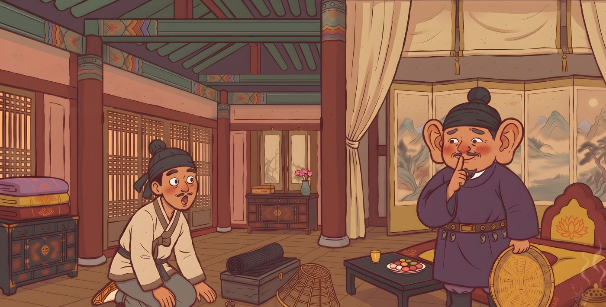

Journal
Notes from the stories
The food, festivals, and folklore behind our books.

Korean Folktales for Little Readers · Book 8
Is Kongjwi the Korean Cinderella?
Two sisters named after beans, a broken hoe, four helpers, and one lost flower shoe.

Korean Folktales for Little Readers · Book 7
Can a bamboo forest keep a secret?
A king with donkey ears, a hat-maker who cannot stay quiet, and a tale first written down more than 700 years ago.

Korean Folktales for Little Readers · Book 6
Are Korean goblins scary? Meet the dokkaebi
A grandpa who loves to sing. Four goblins who love to dance. And one very clever answer.

Korean Folktales for Little Readers · Book 5
Why is a swallow a lucky bird in Korea?
One kind brother, one greedy brother, and a little swallow who knows the difference.

Korean Folktales for Little Readers · Book 4
The rabbit, the turtle, and a 1,300-year-old tale
One of Korea’s oldest stories, still sung today in pansori.

Korean Folktales for Little Readers · Book 3
Why Korean parents call a child a little “green frog”
A rainy-day folktale, and a nickname Korean parents still use.
Korean Folktales for Little Readers · Book 2
Dongji: the longest night and a bowl of red bean porridge
Why Korean families eat patjuk on the winter solstice.

Korean Folktales for Little Readers · Book 1
What is gotgam, and why is a tiger afraid of it?
The sweet winter treat behind one of Korea’s best-loved folktales.